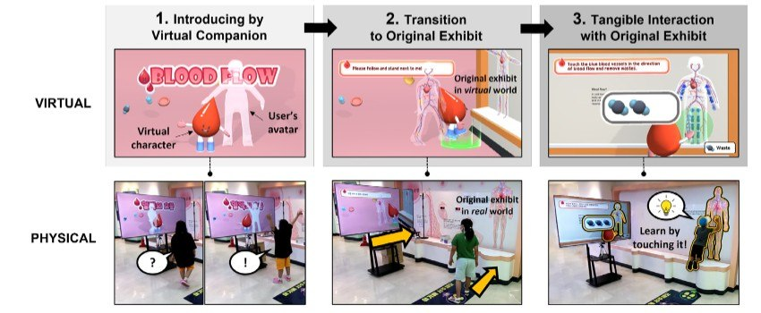

Embodied and tangible museum interactions
Can a digital companion draw visitors into a physical exhibit?
International Journal of Human-Computer Studies · Journal article · Dajin Lee and Daehyeon Nam contributed equally.

Research question
Some physical exhibits struggle to attract and retain attention. This project develops a virtual companion that supports interaction before and during use of the original exhibit.
Prototype and study
A virtual character, embodied interaction, and tangible augmentation create a sequence from initial engagement to hands-on exploration. Iterative development and field evaluation take place in a science museum.
Findings
The studies examine visitor engagement, prolonged use, and learning experience, showing how digital augmentation can support interaction with the original physical exhibit.
See the research
Publication
Augmenting Outdated Museum Exhibits with Embodied and Tangible Interactions for Prolonged Use and Learning Enhancement
International Journal of Human-Computer Studies, 2025.